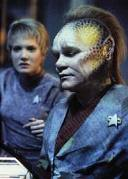
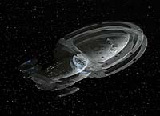
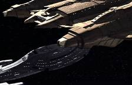
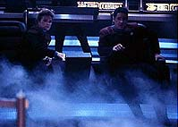
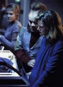
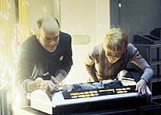
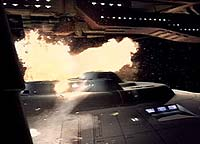
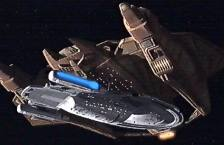

|
MANCHETE
DO EPISDIO
Mais uma maluquice quntica de Braga
produz bom episdio de Voyager
Episdio
anterior | Prximo
episdio
Sinopse:
 A
Voyager altera seu curso a fim de evitar um setor habitado pelos
Vidiians, enquanto a alferes Wildman entra em trabalho de parto. Na
Ponte, Tom Paris guia a nave rumo a uma nebulosa a fim de camufl-la,
mas o que acontece em seguida pega todos de surpresa. Os motores de
dobra param, o suprimento de anti-matria drenado e exploses
de prtons danificam seriamente o casco da Voyager. Sem tempo para
investigar o que acontece, a tripulao sofre com a morte do recm-nascido,
do alferes Kim e o sumio misterioso de Kes.
Conforme os rombos no casco aumentam, a nave forada a operar em
modo de emergncia e a ponte tem de ser evacuada s pressas,
quando novas exploses inutilizam o centro de comando. Para sua
surpresa, uma outra Janeway v a si mesma cruzando a ponte, algo
que atribui flutuao espacial causada pela passagem da Voyager
pela nuvem de plasma. A capit ento ordena uma varredura por
anomalias e, em seguida, vai visitar a alferes Wildman na enfermaria
e seu novo beb, que aparenta estar bem. Depois, pergunta ao Doutor
sobre a outra paciente, que idntica a Kes.
 Essa
outra Kes relata a srie de eventos que ocorreram minutos antes, o
que leva Janeway a crer que h uma outra Voyager nas proximidades.
Aparentemente, o campo de divergncia por que a tripulao passou
fez com que todas as leituras de sensores fossem duplicadas, assim
como toda partcula de matria da nave. Infelizmente, no h
anti-matria suficiente para manter as duas naves e a capit
alerta a outra tripulao. Aps a fuso das duas "Voyagers"
falhar, Janeway decide ir com Kes para a nave danificada.
As duas "capits" se encontram e discutem opes. A
comandante da nave mais avariada pretende acionar a auto-destruio
na tentativa de salvar a outra tripulao. Com os Vidiians se
aproximando, as duas "Janeways" sabem que precisam agir
com rapidez ou ambas tripulaes morrero. Logo depois, os aliengenas
invadem uma das naves.
 Desesperados
para roubar os rgos saudveis a fim de combater a fagia, os
Vidiians comeam a atacar os tripulantes. Uma das capits decide
agir. Ela aciona a auto-destruio e ordena que o alferes Kim leve
o beb da alferes Wildman para a Voyager danificada. Os Vidiians so
ento destrudos com a exploso, bem a tempo de Harry chegar na
"duplicata" da nave salva.
Comentrios:
Certamente h crticas
a se fazer acerca do roteiro de "Deadlock". Por
outro lado, as coisas boas deste episdio fazem dele, em muitos
sentidos, um dos melhores na temporada. H drama, boa atuao,
premissa envolvente... e a clebre tecnobaboseira de Voyager.
 O
paradoxo da histria no envolve apenas a duplicao da nave e
sua tripulao, mas tambm o senso de famlia a bordo; foi muito
legal ver o quanto o nascimento da filha de Wildman capturou a ateno
de todos. No entanto, estranho que ningum parea ter se
abalado quando B'Elanna anunciou a morte de Harry (nem mesmo Tom,
que se diz seu melhor amigo, ou a capit, que o olha de perto como
a um filho).
Mas, deixando os detalhes de lado e partindo para as grandes questes,
por que Janeway, assim que a presena Vidiian foi detectada, no
ordenou simplesmente que Paris os tirasse daquele setor em dobra mxima,
poupando assim todos do problema? Afinal, a Voyager , para a sua
poca, uma das naves mais rpidas da Frota, podendo atingir a
dobra 9,975. claro, se isso tivesse acontecido, os roteiristas
teriam perdido uma trama em potencial para a srie...
 Infelizes
tambm so algumas inconsistncias no final do episdio. Quando
uma das capits aciona a auto-destruio e sua nave vai pelos
ares, Chakotay, inteligentssimo --e como sempre com grande
participao na histria--, informa que os Vidiians foram destrudos,
junto com a outra Voyager. Isso , no mnimo, bvio, j que foi
a exploso da nave a responsvel pela runa dos inimigos. Da
mesma forma, em outra cena, o Doutor pergunta a Harry se seu
"contraparte" tinha um nome. Como seria possvel o outro
mdico ter um nome, se a nave s foi dividida minutos ou horas
antes?
Falhas como essas acontecem e sempre acontecero em Jornada.
Mas, num apanhado geral, "Deadlock" conseguiu
entreter bem. A atuao, nesse episdio em particular, foi muito
boa. Merece destaque a atriz Nancy Hower, que interpreta a alferes
Samantha Wildman. A personagem tem sido muito bem aproveitada ao
longo da segunda temporada e sobreviver at o final da srie.
Seu beb, uma menina ainda sem nome, reaparecer durante o quarto
ano como Naomi Wildman e, nas trs ltimas temporadas de Voyager,
se tornar a personagem secundria de maior importncia.
 "Se
uma Janeway incomoda muita gente... duas Janeways incomodam,
incomodam muito mais!" Brincadeiras parte, tambm foi boa
--e esquentada-- a discusso entre as "duas capits".
Quando duas mulheres extremamente teimosas (ou melhor, a mesma,
duplicada) se confrontam, todos tm de encarar as conseqncias.
Embora estivesse quase certo que a capit da nave danificada
acionaria a auto-destruio, a outra no hesitou em faz-lo
quando deu-se conta da realidade --no se deixou levar pelas emoes.
A apario dos Vidiians em Voyager sempre interessante.
Eles so provavelmente a raa mais original criada no seriado. S
uma pena que sua histria e as implicaes morais de suas
atitudes no tenham sido exploradas mais a fundo. Mas, at o final
desta temporada, eles podero ser vistos novamente.
 Finalizando,
outra coisa legal foi toda a teoria da duplicao ter sido
explicada. Geralmente, os fatos so jogados sem qualquer fundamento
cientfico. Apesar de pouco convincentes, as justificativas
ganharam credibilidade especial pela forma como foram escritas, com
direito inclusive a menes sobre pesquisas experimentais feitas
em universidades.
Alis, justificar maluquices qunticas um dos passatempos
preferidos do escritor do episdio, Brannon Braga. Um dos episdios
"solo" mais interessantes escritos por Brannon, "Parallels",
do stimo ano de A Nova Gerao, envolve uma situao
parecida, em que Worf fica transitando entre diferentes Enterprises
de universos alternativos.
 "Deadlock"
tambm merece um elogio especial por ter evitado um "reset"
simples demais. Logo que a audincia v a Voyager ser despedaada,
j comea a expectativa por um evento (provavelmente envolvendo
viagem no tempo) que anule tudo o que havia acontecido, extirpando o
episdio da realidade.
Felizmente, a soluo aplicada deixa algumas seqelas, produzindo
um "reset" de ordem prtica, mas ainda assim dando a
entender que no se trata de uma mera excluso da histria que
acaba de ser vista. Isso se manifesta pela confuso de Harry, em
conversa com sua capit, em razo de seu intercmbio de
realidades. Ponto para o roteiro.
Citaes:
Janeway - "It is the
first baby born on Voyager. I'm just not sure whether I should be
welcoming it onboard, or apologizing."
(" o primeiro beb nascido na Voyager. S no sei se
deveria dar as boas-vindas ou pedir desculpas.")
Janeway - "And I'm in no mood to donate any organs today."
("E eu no estou a fim de doar rgos hoje.")
Doutor - "Good news, Ensign. Our baby is perfectly healthy."
("Boas notcias, alferes. Nosso beb perfeitamente saudvel.")
Janeway - "Mr. Kim, we're Starfleet officers. Weird is part
of the job."
("Sr. Kim, somos oficiais da Frota. O estranho faz parte do
emprego.")
Trivia:
 O alferes Hogan (Simon Billig) tambm retorna aps vrias
participaes em Voyager. Mais recentemente, o ator
participou de outras sries sci-fi, como "Babylon 5"
(1998) e "Seven Days" (1999).
O alferes Hogan (Simon Billig) tambm retorna aps vrias
participaes em Voyager. Mais recentemente, o ator
participou de outras sries sci-fi, como "Babylon 5"
(1998) e "Seven Days" (1999).
Outra personagem secundria que volta a alferes de cincias
Samantha Wildman (Nancy Hower). Como a Voyager j est perdida h
mais de um ano, s se pode imaginar que o perodo de gestao em
casamentos entre humanos e Ctarianos muito longo.
Ficha
tcnica:
Escrito por Brannon Braga
Direo de David Livingston
Exibido em 18/03/1996
Produo: 038
Elenco:
Kate Mulgrew como
Kathryn Janeway
Robert Beltran como Chakotay
Roxann Biggs-Dawson como B'Elanna Torres
Robert Duncan McNeill como Tom Paris
Jennifer Lien como Kes
Ethan Phillips como Neelix
Robert Picardo como Doutor
Tim Russ como Tuvok
Garrett Wang como Harry Kim
Elenco convidado:
Nancy Hower como Samantha Wildman
Simon Billig como Hogan
Bob Clendenin como cirurgio Vidiian
Ray Proscia como comandante Vidiian
Keythe Farley como Vidiian 2
Chris Johnston como Vidiian 1
Episdio
anterior | Prximo
episdio
|